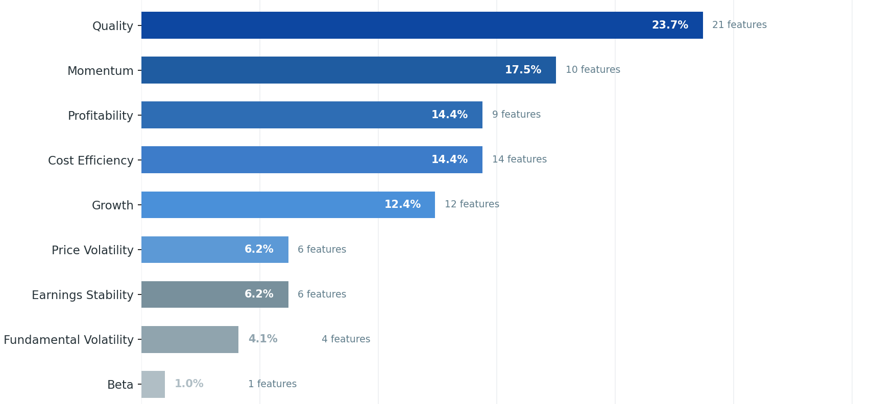

Quarterly Signal Fund
Wealth Management Portfolios - Methodology & Approach
Build a long-only portfolio that beats the index and feels credible to clients.
Three things have to be true at once, and the rest of this deck shows how each one is delivered.
Select stocks each quarter using ML probability scores and measure excess return against an index.
Make exits, drawdown, cash drag, and risk behavior first-class parts of the simulation.
Give clients a clear explanation of what was bought, how it behaved, and why it exited.
One quarterly pipeline turns public filings into risk-aware stock selection.
The stages below run in order every quarter; the next slides open up each one.
Operating Rules
- ML models extract signal from quarterly results posted by NIFTY 500 companies.
- Positions enter across a 3-day entry phase every quarter after SEBI filing deadlines.
- Model scores combine with historical volatility to build portfolios that emphasize lower drawdowns.
- Exit strategy uses take-profit and stop-loss rules to manage the quarter after entry.
Key Innovation
The model predicts relative outperformance versus the market, not absolute returns.
That creates a fundamentals-for-entry, technicals-for-exit approach designed to limit downside.
It all starts with the filings: we enter one day after each SEBI deadline.
That keeps target creation, backtesting, and live inference aligned around the same post-result entry window.
| Code | Entry start | Exit | Reason |
|---|---|---|---|
YYYY02 | Feb 15 | May 30 | After Q3 deadline |
YYYY05 | May 31 | Aug 14 | After Q4 deadline |
YYYY08 | Aug 15 | Nov 14 | After Q1 deadline |
YYYY11 | Nov 15 | Feb 14 | After Q2 deadline |
Behind that signal, a 10-year window slides forward one prediction year at a time.
Each window trains only on history available before the prediction year, so there is no future leakage.
Result
Each window produces probability scores for every NIFTY 500 stock in the prediction year.
Inside each window, the model reads these feature categories.
Feature distribution across categories - quality, momentum, profitability, efficiency, growth, and volatility.

Once names are owned, exits decide how the quarter is survived.
Lock gains when a stock reaches planned upside.
Cut failed ideas before they dominate the quarter.
Refresh at the next result-filing cycle.
Every stage above carries its own levers. Combined, they make a search space too large to tune by hand - even five choices across ten parameters reach millions.
Selection levers
Top-k, category counts, weighting schemes, probability thresholds, sorting choices.
Exit levers
Flat, tiered, ATR, pivot, independent TP/SL modes and mode-specific parameters.
Market levers
Index moving averages, risk thresholds, volatility adjustments, risk-free cash behavior.
Quarterly Signal Fund
Methodology built for repeatable, explainable wealth management portfolios.